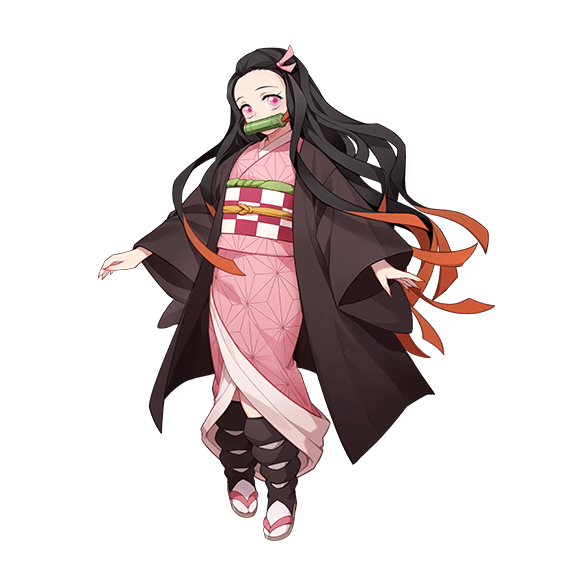
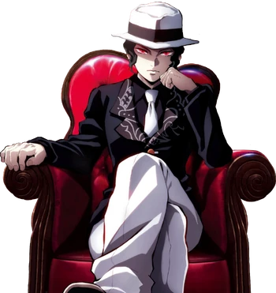
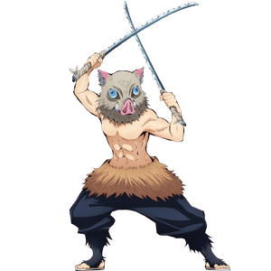

SYNOPSIS

Demon Slayer: Kimetsu no Yaiba is a Japanese manga series written and illustrated by Koyoharu Gotouge. It was serialized in Shueisha's shōnen manga magazine Weekly Shōnen Jump from February 2016 to May 2020, with its chapters collected in 23 tankōbon volumes.
The story takes place in Taishō era Japan, where a secret society, known as the Demon Slayer Corps, has been waging a secret war against demons for centuries. The demons are former humans who were turned into demons by Muzan Kibutsuji injecting them with his own blood, and they feed on humans and possess supernatural abilities such as super strength, powers that demons can obtain called "Blood Demon Art", and regeneration. Demons can only be killed if they are decapitated with weapons crafted from an alloy known as Nichirin, injected with poison extracted from wisteria flowers, or exposed to sunlight. The Demon Slayers, on the other hand, are entirely human. However, they employ special elemental breathing techniques, known as "Breathing Styles", which grant them superhuman strength and increased resistance, helping them fight against demons. The strongest Demon Slayers are known as the Hashira, and gain this rank through either killing a member of the Twelve Kizuki (the twelve strongest demons under Muzan) or killing fifty demons after ranking up multiple times.
It follows teenage Tanjiro Kamado, who strives to become a Demon Slayer after his family was slaughtered and his younger sister, Nezuko, turned into a demon. The story revolves around how Young Tanjiro Fights against demons to reach and kill Kibutsuji Muzan and turn his sister back into a Human.
AUTHOR
Koyoharu Gotouge born May 5, 1989 is a Japanese manga artist, known for the manga series Demon Slayer: Kimetsu no Yaiba (2016–2020). As of February 2021, the manga had over 150 million copies in circulation (including digital copies), making it the ninth best-selling manga series of all time.Gotouge was included as "Phenoms" in Time's annual list of 100 Most Influential People, becoming the first manga artist to receive the achievement.
The author uses a pen name to maintain anonymity.In 2013, Gotouge debuted in the 70th Jump Treasure Newcomer Manga Awards with the one-shot work Kagarigari. Three more one-shots followed: Monju Shirō Kyōdai , published in Jump Next! in 2014; Rokkotsu-san , published in Weekly Shōnen Jump in 2014; and Haeniwa no Zigzag, published in Weekly Shōnen Jump in 2015.After Haeniwa no Zigzag failed to be a serialized series, Tatsuhiko Katayama (Gotouge's first editor) suggested to start a series with an "easy-to-understand theme". Gotouge's debut work Kagarigari would serve as a basis for Demon Slayer: Kimetsu no
CHARACTERS
Kamado Tanjiro

Tanjiro Kamado is the main protagonist of the prominent anime/manga series, Demon Slayer: Kimetsu no Yaiba.He is also the older brother of Nezuko Kamado and is the eldest child of the Kamado family. He is a Kanoe-ranked Demon Slayer and a member of the Demon Slayer Corps. He became a Demon Slayer in order to find a way to turn Nezuko back into a human, and hunt down the demon who is responsible for the murder of his family and his sister's transformation into one.
Tanjiro is kind by nature and has been described by others as having very gentle eyes. He exhibits a great deal of determination and will not give up once he has a goal to achieve; the best example of this is his relentless quest to find a cure for Nezuko.Even though he is relatively strong on his own, Tanjiro isn't opposed to asking others for help when he needs it. He is very protective of his friends and even more so of his younger sister. However, despite his kind and understanding nature, Tanjiro does have a limit to his tolerance and has a distaste for rudeness, as he easily becomes annoyed by Zenitsu Agatsuma's constant whining, and angered by Inosuke Hashibira's barbaric actions.
Tanjiro's most notable attribute is his ability to empathize with anyone, even demons, which often made him hesitate before delivering the final blow. This moment of hesitation has a downside, as it has allowed some Demons to take advantage of Tanjiro's understanding nature to recover and continue the fight, though this occurs rarely.
Nezuko Kamado
Nezuko Kamado is the deuteragonist and main female protagonist of the 2016-2020 fantasy horror manga (and anime) series Demon Slayer: Kimetsu no Yaiba. Nezuko was originally an ordinary girl born into a poor yet happy family.The second born of the six Kamado siblings, Nezuko maintained a strong bond with her mother and siblings, especially with her older brother Tanjiro and her youngest brother Rokuta.Tragically, however, a demon named Muzan Kibutsuji came to the Kamado household one day and murdered everyone present.
As a human, Nezuko was a kind and caring girl, who thought of others before herself much like her older brother, Tanjiro, and was a responsible older sister to her younger siblings. Nezuko is, however, not afraid to get in harm's way, protecting her friends from Demons even after being returned to a human state.Since becoming a Demon, Nezuko appears to have become also rather brazen, and does not seem to fear fighting; she fiercely guards her brother as well as her allies. She has also developed a strong willpower, which can be seen through her refusal to consume human flesh or blood, even in cases of extreme injury or exposure to human blood.
Kibutsuji Muzan
Muzan Kibutsuji is the main antagonist of Demon Slayer: Kimetsu no Yaiba. He is the Demon King, the first of his kind, and the progenitor of all other demons in existence. Muzan is also the leader of the Twelve Kizuki, an organization of the twelve strongest demons in existence that serve directly under him.
A millennium ago, during the Heian Era, Muzan was turned into a demon during an experimental treatment trying to cure his terminal illness, and his goal since then was to live without the fear of death and become truly eternal. He plans to accomplish this in two ways: finding the Blue Spider Lily or creating more demons in hopes that one day one would be able to conquer their weakness of sunlight.
As the Demon King, Muzan can control all those who have assimilated his blood to become demons, with Nezuko Kamado being an only exception. It is later revealed that Muzan is of the same bloodline as the Ubuyashiki Family which is the Founding Family of the Demon Slayer Corps.
Agatsuma Zenitsu

Zenitsu Agatsuma is one of the main characters of the 2016 fantasy horror anime and manga series Demon Slayer: Kimetsu no Yaiba, as well as the movie, Demon Slayer: Kimetsu no Yaiba the Movie: Mugen Train.
Zenitsu is a powerful Demon Slayer and a member of the Demon Slayer Corps. Although he was originally roped into joining the Corps by his mentor Jigoro Kuwajima(His Grandfather), Zenitsu later realizes the importance of the Demon Slayer Corps.
Zenitsu is a coward; always claiming he doesn't have long to live due to the dangerous job of being a Demon Slayer. He also has rather low self-esteem despite his strength, to the point that he thinks he's actually useless, as seen when he couldn't believe he'd slain a Demon that he had.
Instead of fighting with full cognizance, when Zenitsu becomes frightened enough, he will faint. When unconscious, he is able to unleash his full potential with Thunder Breathing without any awareness of it and no cowardice to hold him back, fighting at a high level on instinct alone. Over time, Zenitsu becomes more competent, not having to rely on this miraculous ability as often.
Inosuke Hashibira
Inosuke Hashibira is one of the main characters of the 2016-2020 fantasy horror manga/anime series Demon Slayer: Kimetsu no Yaiba and its 2020 stage play. Furthermore, he appeared in the 2020 anime movie Demon Slayer: Kimetsu no Yaiba the Movie: Mugen Train which was adapted from the Mugen Train arc of the manga
He is a member of the Demon Slayer Corps who makes use of his self-made sword style Beast Breathing. He is a travelling companion of the series' main protagonist Tanjiro Kamado. His arch-nemesis was Doma, a powerful demon and member of the Twelve Kizuki who held the position of Upper Two and was the demon responsible for murdering Inosuke's mother when he was only a baby. After that he was orphaned he was found and rescued by a pack of boars, that raised him as their own in the mountains.
Inosuke is an extremely short-tempered and proud man who always likes to think he is the strongest fighter in a situation, constantly challenging most people he comes across and wanting others to respect and praise him for his skill.This often leads him into unnecessary danger, since he tends to overestimate his abilities in comparison to who it is he's fighting and refuses to accept when he's been defeated.
For Fans

WATCH NOW:)

Buy Manga

Buy Merch
You May Like These...

POKEMON

CHAINSAW MAN

SPY X FAMILY
© Made by - Pranesh Pandian S